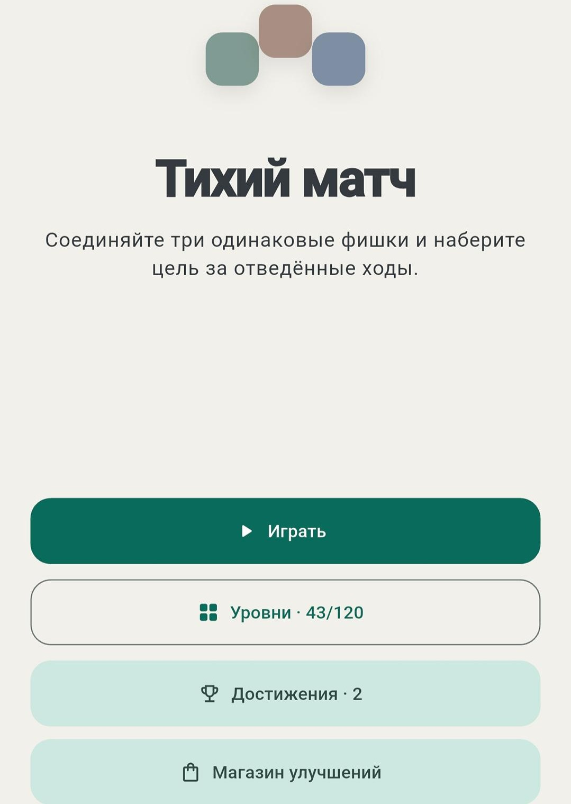

Политика конфиденциальности «Громкого матча»
Дата вступления в силу: 12 августа 2026 года
Разработчик приложения — Роман Черкасов. По вопросам конфиденциальности: palkamon@yandex.ru.
Какие данные использует приложение
Игровой прогресс, настройки звука, языка и рекламной персонализации сохраняются локально на устройстве. Приложение не создаёт собственных пользовательских аккаунтов и не передаёт игровой прогресс на сервер разработчика.
Реклама
Android-версия использует Yandex Mobile Ads SDK для межстраничной и вознаграждаемой рекламы. Рекламная сеть может обрабатывать сведения об устройстве, рекламный идентификатор, IP-адрес и технические события показа в соответствии с политикой конфиденциальности Яндекса.
При первом запуске пользователь может разрешить или запретить персонализацию. При отказе реклама продолжает показываться без персонализации. Выбор можно изменить в настройках приложения.
Возраст
Приложение рассчитано на пользователей от 13 лет и не предназначено специально для детей младше 13 лет.
Удаление данных и изменения
Локальные данные можно удалить кнопкой сброса прогресса или удалением приложения. Политика может обновляться вместе с приложением; актуальная версия всегда доступна по этому адресу.
Loud Match Privacy Policy
Effective date: August 12, 2026
The app is developed by Roman Cherkasov. Privacy contact: palkamon@yandex.ru.
Data used by the app
Game progress, sound, language, and ad-personalization settings are stored locally on the device. The app does not provide developer-operated user accounts and does not send game progress to the developer's servers.
Advertising
The Android app uses the Yandex Mobile Ads SDK for interstitial and rewarded ads. The advertising network may process device information, advertising identifiers, IP address, and technical impression events under the Yandex Privacy Policy.
Users can allow or decline personalized advertising at first launch. Ads remain available without personalization. This choice can be changed in the app settings.
Age
The app is intended for users aged 13 and older and is not specifically directed to children under 13.
Deletion and updates
Local data can be removed through the progress reset control or by uninstalling the app. This policy may be updated with the app; the latest version remains available at this address.